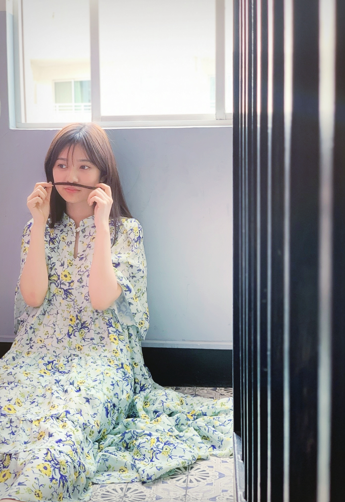
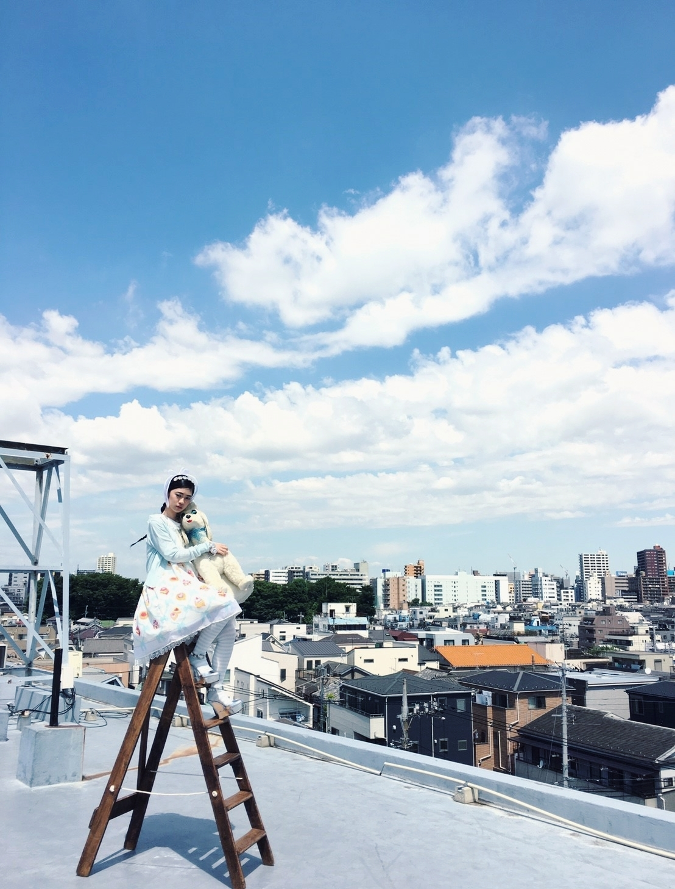
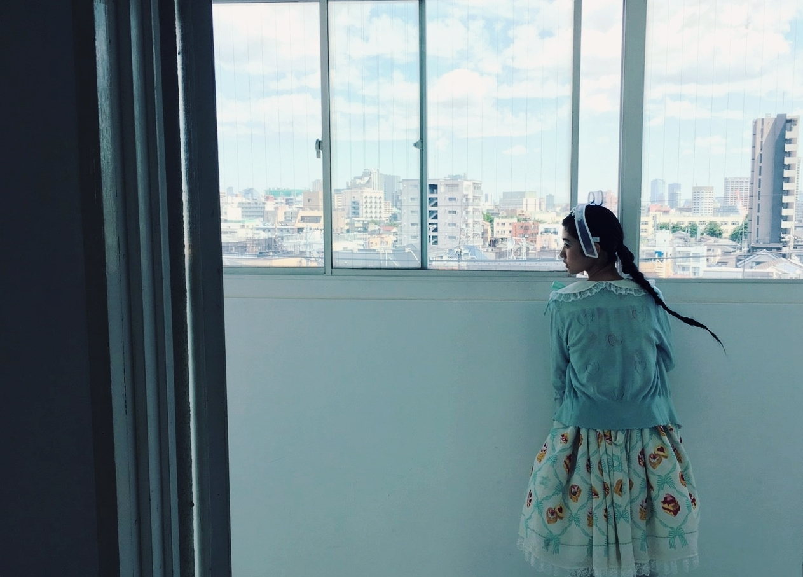
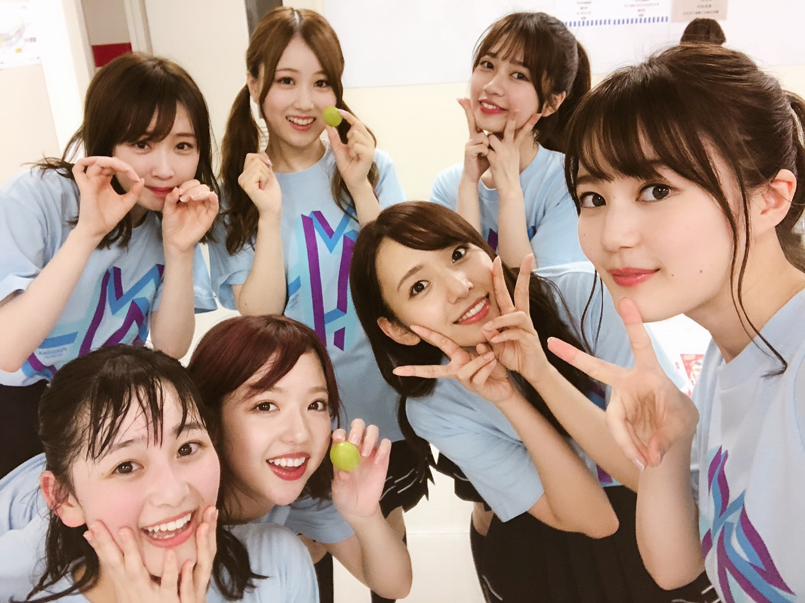

2019/0816Friブルー
旅猿をみてて
スリランカも素敵な国だなーと
旅番組好きです☺️
バナナマンさんの
ドライブスリーも最近好きな番組のひとつです
お二人の可愛さがよく伝わる番組だと思ってます。
特に、バカリズムさんと三人の回は凄くお気に入りです。
あとはいろはに千鳥も独特のあの空気感が好きです
外でロケしてたり
私にとって非日常だったり
体験のないことをしている番組が好きなのかなと感じました
アウトドアではないけど実は憧れてるのかも☺️
他にも沢山ありますが
とりあえず私はテレビっ子
テレビ好きです☺️



今年の夏は水色
ブルーが気分です☺️
という事で過去の画像から青い写真を探してきました！！
思ったよりなくて懐かしいものばかり
やっぱり、赤色暖色、原色パキっとした色味のお衣装だったりテーマの撮影が多いイメージなのかな
水色は、最近の持ち物とか私服でも多く取り入れてます☺️
今年の生誕グッズも水色にしました。
TシャツにTシャツを描くと言う斬新さ
生誕Tシャツだけは
お洒落になりすぎず
個性と独創的をテーマにします。
背中には
洗濯すると書きました。
実は以前
「らんぜの生誕Tシャツのデザインを見た母親がいつもこのTシャツを洗濯する度に
このTシャツ可愛くて面白いねって
笑ってくれます」
そう握手会で話してくれた人が居て
そこからインスピレーションしました。
そして、最近では海外からのファンの方も沢山居て
お会いしたことある国の言葉を出来るだけ選んでみました。
もっともっと沢山の人に出逢えますようにと日本語だけでなくグローバルにしてみました。
爽やかで良きかな
是非、沢山着てください☺️

皆のTシャツ水色だ
握手会ありがとうございました☺️
そして、大阪
台風の影響により
2日目は中止とさせて頂きました。
メンバーもこの日の為に
準備をしてきたので中止と言われると悲しい気持ちにもなりますが
皆さんの安全を第一に
ありがとうございました☺️
沢山色んなことがありましが
真夏さんー！！
これからも変わらずに宜しくお願い致します。
2期生として支えていきます。
そして、乃木坂46を宜しくお願い致します。
京セラドームも沢山の方が来てくださって本当にありがとうございました
ステージバッグの方まで
ほぼ360度皆さんの声援が聴こえました！
皆さんの夏の思い出になれていれば何よりです！
ライブ後の喉のケアも忘れずに
残すは神宮球場の東京公演のみになりました
夏はあっという間にですね
夏の暑さ、湿度にやられているのですが夏は夏で楽しみたいですし
涼しくなる秋も楽しみ
四季って素晴らしきかな☺️
2019/08/16 20:06


コメント(543)
蘭世さん応援してます！頑張って下さい
Ｔシャツ買いました！届くの楽しみにしてるね！蘭世の個性と独創的な感じ好き！頑張って着こなしますよ、！
ライブお疲れ様でした安全が第一だよね。夜大阪雨、風すごかったしね残りの公演も楽しみにさせていただきます。
早く涼しくなれー笑笑
応援してます。
乃木坂46めっちゃ好き。乃木坂46の曲もめっちゃ好き
大阪のライブお疲れさまー
2日目中止は残念だったね
次は神宮だね、三日目のライブビューイングで楽しませてもらいます！
握手会名古屋いくから待っててねー
ゆーと
神宮楽しみにしてます(^^)
幕張と神宮で会おうね
熱中症に気をつけて頑張ってください！
レスも返してくれてありがとう！
最高の1日でした！
明日から仕事頑張れます！
蘭世もいつかバナナマンさんと旅出れば良いなあ(｡>﹏<｡)
そして蘭世の青色のイメージは確かに薄いなあ（笑）でもやっぱり青色でも似合うよ可愛いよ。なんか天使みたいだなあ(*´ω｀*)
生誕Tの届きは楽しみ＼(^o^)／
これからも頑張って(/･ω･)/
さゆりんご軍団の方を触れない？
ブログありがとう
いつもだいすきだよぉ！
らんぜちゃんの生写真買いました
かわいい
水色、ブルー！ 夏らしくていいよね(*´`)
ライブお疲れ様！大阪でのライブ最高に楽しかったよ！！
次の神宮でのライブも楽しみにしてます。
神宮行きますので声援いっぱい送ります( ^ω^ )
ファンとしても多分この夏一番の思い出になったよ
ブログ更新ありがとう！
ゆっくり読んでまた後でコメントしに来るね
じゃあまた！
大阪公演お疲れ様でした。
二日目はとても残念でしたが
その日の蘭世のメールのおかげで
寂しい気持ちが紛れました。
最後に蘭世もいつかそういうロケいけるといいですね。
まだ暑い日も続くし忙しいと思うけど頑張ってね、応援しとるよ！！
水色の服の蘭世かわいいです！
ライブ中止残念だったけど台風のとかだからしょうがないよね
神宮のライブ発券してきたらアリーナだったから今からライブ楽しみに待ってます！
夏も楽しみたいけど秋も楽しみだね
ブログの更新でブルーな気持ちが晴れて青空になりました。
蘭世はいつも太陽な存在です。
次会えるの、大阪の握手会が楽しみ！！
私もテレビっ子ですよ！
蘭世さんほんとにどの色の服も合ってますね！
全ツ大阪2日目中止になったのは残念でした…
私にとってはじめてのライブだったのですが仕方ないですね…
また関西でライブするの期待してますね！
蘭世さん今日もお疲れ様でした！
ライブ2日目で会えなかったのはちょっと寂しいけどメールいっぱいくれたからエネルギーチャージされたーー！！！！
ありがとう。
七夕個握ありがとう！蘭世2部と4部行った！
元々15日参戦予定が中止になりどうしても地元関西で全ツデビューしたくてステージバック急遽とって参戦出来たー！
蘭世センターのここにいる理由と滑走路感動したよ！
30日神宮も行くからよろしく！！3塁側のスタンド前の方にいるからよろしくお願いします！見つけて！
全ツ大阪いったよ(｀-ω-´)
ツインテールに特攻服は最強！！
個握も行くね〜！
いつも、蘭世のブログには元気を貰います(･_･、)
4期生や、卒業する方が増えてきて
また新しい乃木坂になってきましたね。蘭世のブログを見ると何故か暖かい気持ちになるというか、言葉で表せないほど
共感深い文章だなと思います( ¨̮ )
前向きで、いつも前進な蘭世が大好きです！
一生の推しです！あ、あと、LIVEお疲れ様でした！
私も、真夏ちゃんがキャプテンってめっちゃいいなと思いました！色んな変化がやってくるかもしれませんが、一生懸命に頑張って下さいね！！ずっと応援してます！！
体調には気をつけてくださいね
蘭世、バラエティ見るのか〜。！
最近テレビ見なくなったな〜、、、
あと、ブルー！！めちゃめちゃ気分だ。！
次の更新も待ってるね！！
実は俺も最近水色のアイテムを取り入れたファッションし始めたんだ。笑
これはシンクロニシティだね笑
蘭世の握手会での話をしっかり覚えてて行動に移してくれるそんな所も好きです。
これからも握手会行かせて頂くので宜しくお願いします！
大阪公演お疲れ様でした！
2日目は出来なかったのは残念だけどその分神宮楽しみましょう！
俺は3日間行くので蘭世のパフォーマンス3回見れるのでとても楽しみにしてるよー
それじゃ今回はこの辺で！
新しい体制になる乃木坂46も蘭世のこともずっと応援してます！
byりゅう
今回の生誕Tも好きです！
大阪2日目行けなくて残念ですが神宮初日でぶち上がりたいと思います！
まなっちゃんが新キャプテンでよかったと思います！
ライブ楽しみましょう！
自分もテレビっ子やけど、旅番組とか見るだけで満足してしまうタイプやから結局外出ずに終わってしまうから、今年の夏はどこか旅行に行こうかな
真夏がキャプテンになるのは正直意外やったけど、れいかが言ってたように最適な人やと思う。
やけど、適応するまで時間とかもかかるやろうから支えてあげてください。自分たちはメンバーを外から見ることしか出来ないので、応援してます。
ライブビューイング行くよ！！
生誕Tシャツ最高かよ！
ドライブスルーちゃんと見たことないんだよね汗
今度見るね！
てことは次の髪色はブルー系かな？笑楽しみにしてるし、もししたら同じにします笑
2日目の中止は残念だったけど、1日でも蘭世のライブで輝いてる姿見れて良かった！
センターで注目される機会も多くて嬉しかったよ！
次は神宮二日目！アリーナだから見つけてね！
えるも
この前の握手会ありがとうございました～！楽しかったです！
蘭世さんの私服すごい好きなので、これからも楽しみにしてます！笑笑
今年は受験勉強で握手会もライブも、もういけないと思いますが、ずっと応援しています！
またお会いするときにはいい報告ができるように勉強がんばります！！
蘭世さんに応援してもらってる！って思ってがんばります！笑
これからも頑張りながらも、頑張りすぎないで、蘭世さんらしく進んでいってください！
人生初乃木坂ライブでした！笑
サイリウム蘭世カラーにしてたけど見えてたら良いな～、と一塁下段のかなり上の方から願ってた笑
生誕グッズ届くの楽しみすぎる！
いつもありがとう
自分は大阪公演でライブ行くのはラストなので夏の終わりを感じてちょっぴり寂しいです。神宮は祝花だけの参戦となります(乃木恋やつ笑)行けない分なんかあればなーって思って頑張りました！笑
後は握手会をモチベに生きて行きます！大会の次の週に握手会なのでちゃんと結果出して握手会行けるようにします
夏の締めくくり怪我なく走り抜けてください！応援してます！！
旅番組っていいよね、そこに行きたくなったり、友達とどこかにでかけたくなっちゃうからさ。笑
懐かしい写真引っ張ってきたね笑
でも水色でも何色でも蘭世さんとっても似合ってます。
個性的な生誕Tシャツ、僕とっても大好きで、日常的にも使用してます。今回の生誕Tシャツ届くのも楽しみです！
大阪ライブお疲れ様です！2日目中止は仕方ないと思います。メンバーやお客さんの安全を考慮した判断なので、責めることは出来ないし、むしろ妥当な判断です。
真夏さん新キャプ就任は驚きました。蘭世さんのみならず、みんなで全力でフォローしていって、さらに素敵なグループにして言って欲しいな。僕達も応援してます！
ラストの神宮公演で、しっかり出し切れるように、僕も券取って行きたいです。お互い頑張ろうね。
大好きです。
ユウキ
生誕Tのデザイン、爽やかですごく好きだよ！
個性的で、蘭世らしさが溢れてて…
素敵なTシャツをデザインしてくれてありがとう！
大阪2日目中止、残念だったね
俺も券あったからすごい残念だった
でも初日入れたし、安全なこと考えたらしょうがないよね
キャプテン発表、すごい驚いたし意外だった
でもすごくしっくりきたし、安心できるなって思った
これからの乃木坂も変わらず応援していくね
僕もテレビっ子なので今度握手会とかで好きなテレビ番組のお話したいです！
大阪のライブ、ありがたいことにアリーナ席で参戦させて頂きました。たしかに2日目がなかったのは残念ではあるけど、そのぶん初日がすっごい濃厚で歴史に刻まれるようなライブだったと思います。歴史が動く瞬間をこの目で見ることができたのはほんとに嬉しかった！
神宮はステージバック席ですが、蘭世たちに声が届くよう精一杯声出ししていきたいと思うんでよろしくお願いします！
応援してますよ！
それで生誕Tシャツがその色なんだね！毎年違う色でクローゼットがどんどん鮮やかになっていくよ！
それにしてもTシャツにTシャツは驚いたよ。
個性的でまた良いね！
もちろん注文したから、届いたら握手会に来ていくね。
大阪中止は残念だけど、自然には勝てないね。神宮に台風が来ないことを願ってそれまで仕事頑張ります！
旅物のテレビ番組、世界の船旅っていう豪華客船で優雅な船旅を取り上げる番組でオススメですよ！
大阪お疲れ様でした。神宮参戦するのでサイリウムは赤白で大いに盛り上がろうと思います！
京セラドームは運良く初日に参加することができました。まさかの時期キャプテンが発表された時はなんだか目頭が熱くなりました。
コメントする